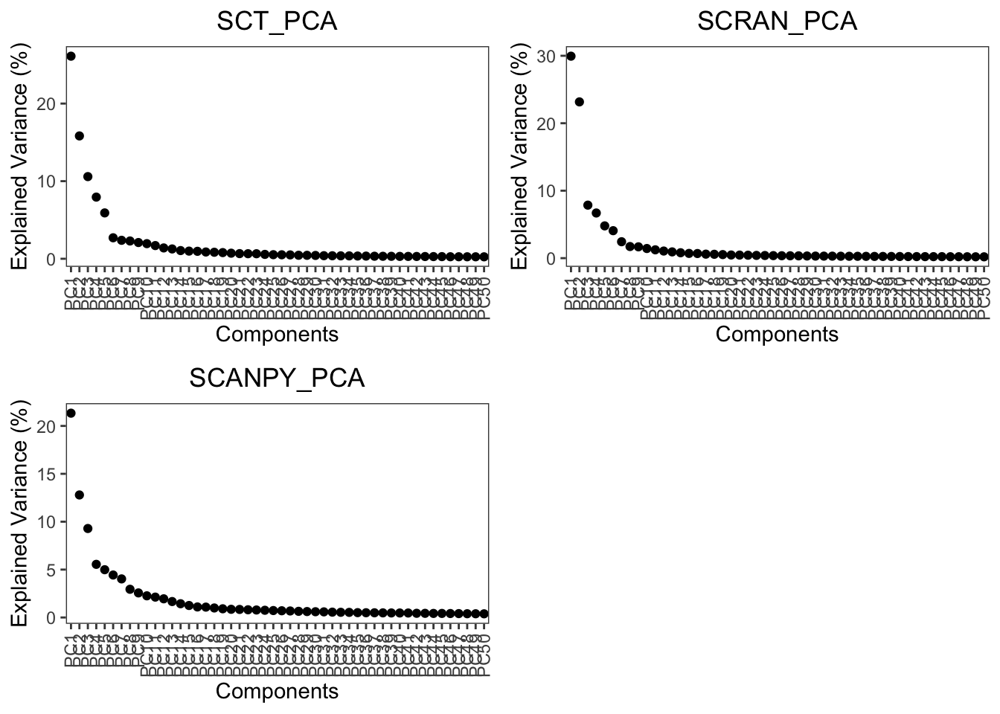
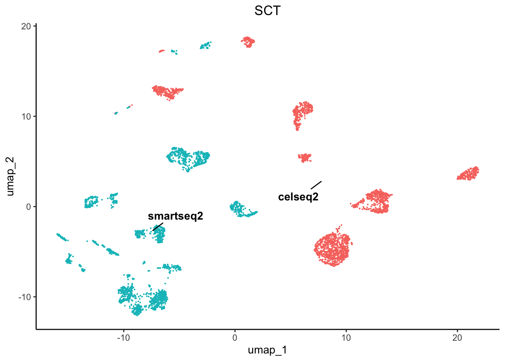
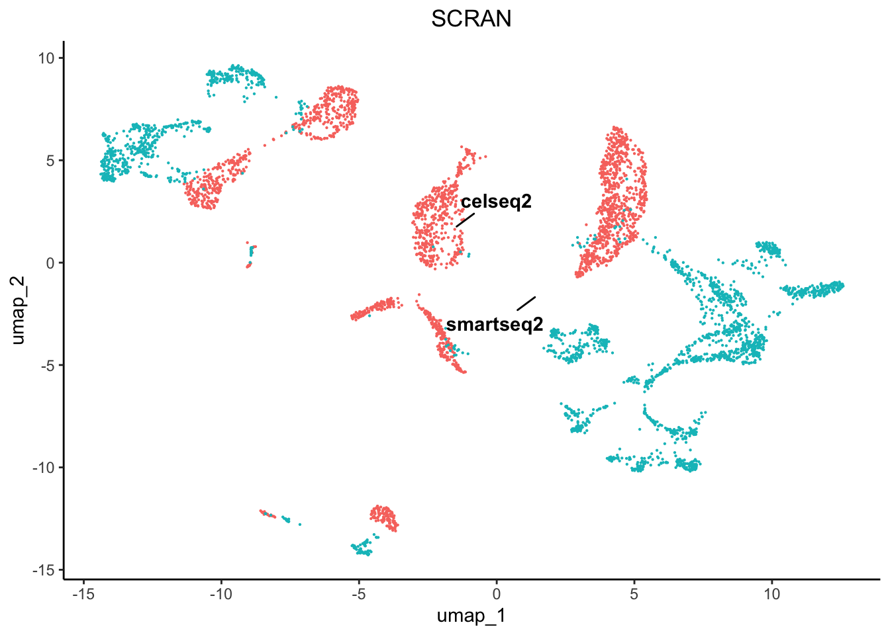
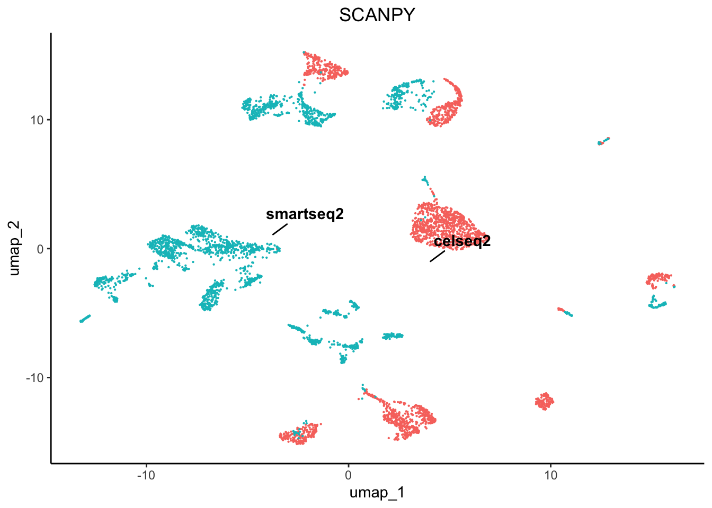
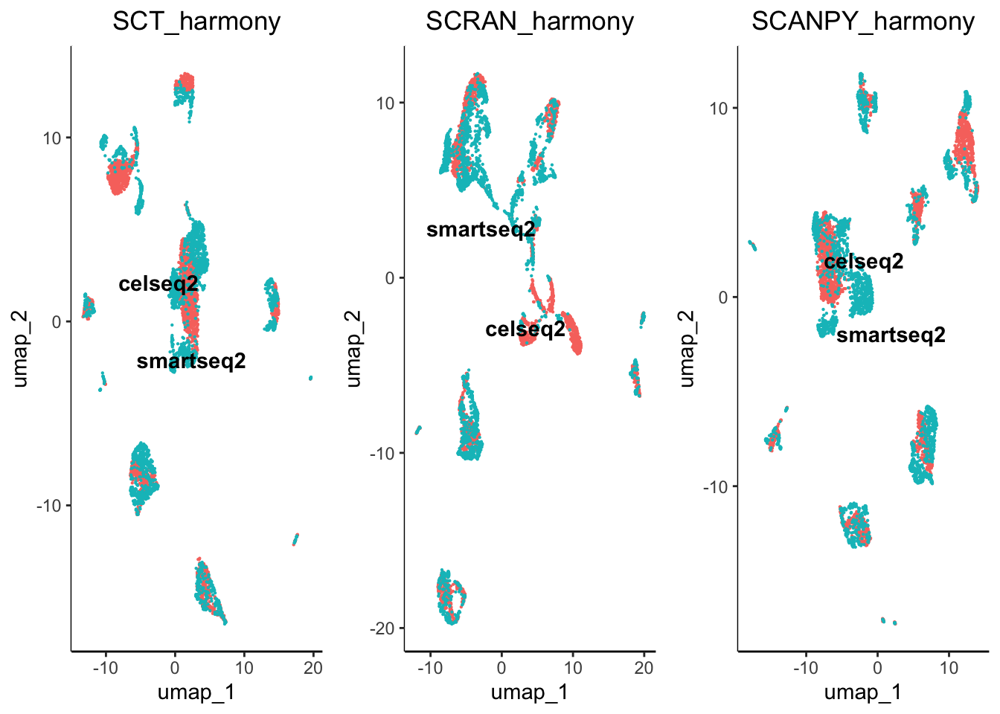
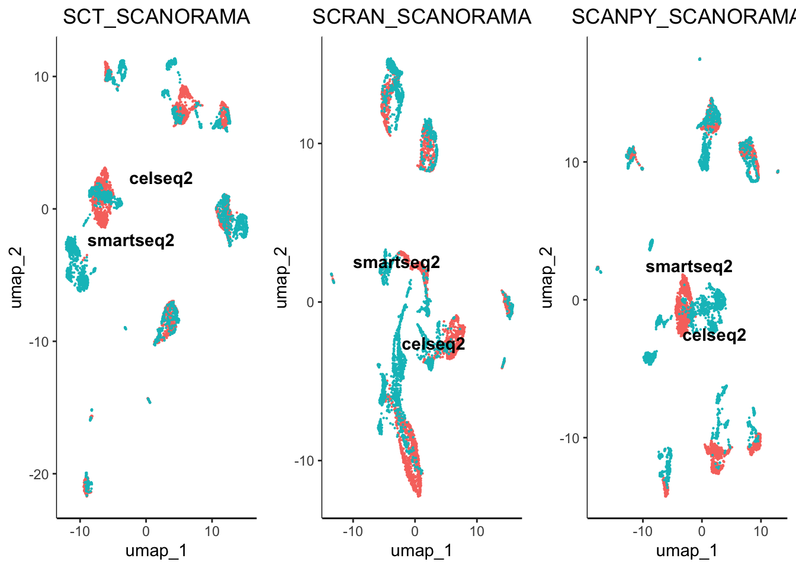
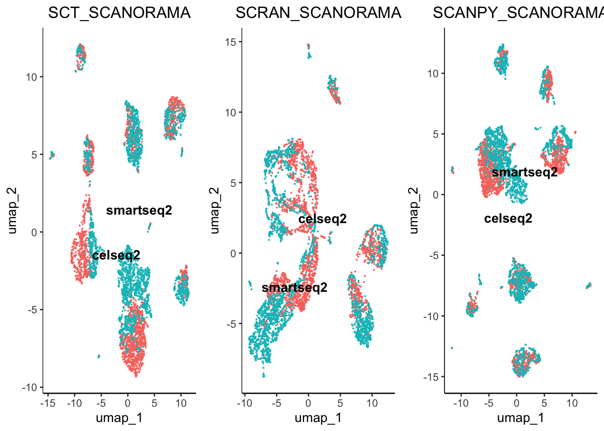
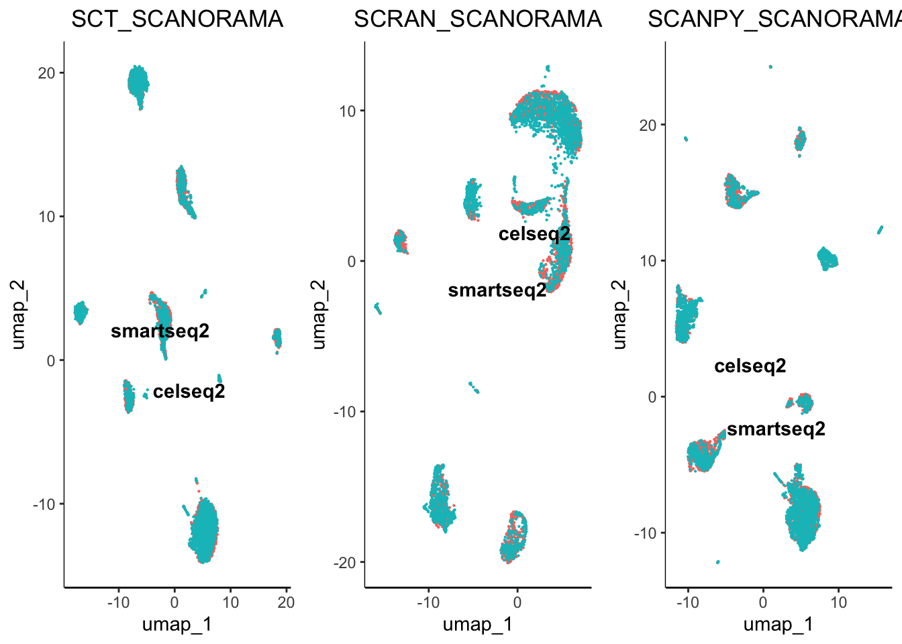
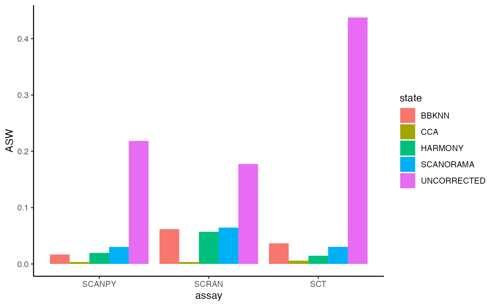
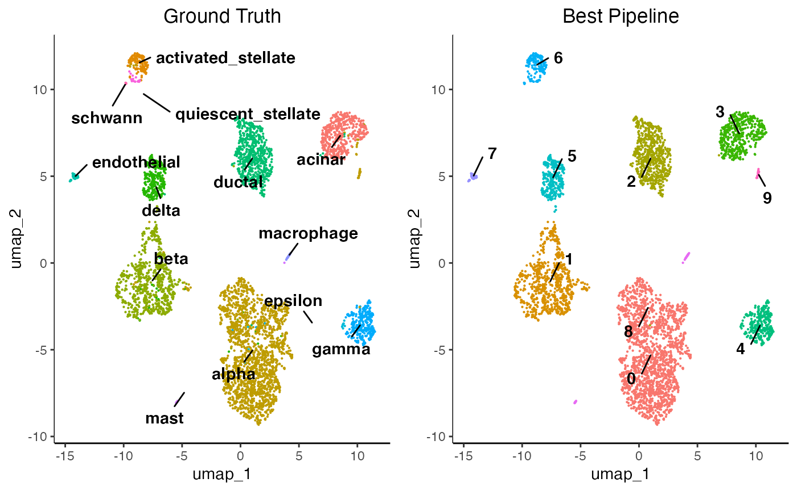

integration.RmdIt is common in single-cell analyses to integrate multiple samples. There are numerous package available for do this, however they function differently and generate different results.Therefore, it is becoming necessary to benchmark a few options before deciding on a method. For this, IBRAP contains 4 integration methods and benchmarking capabilities to distinguish the best solution.
For this tutorial, we have supplied two well-characterised pancreas samples: CELseq2 and Smartseq2 which contain 2285 and 2394 cells, respectively.
You can download the data for this tutorial using the following links:
# Here we set the maximum amount of RAM R may use, for this we have allowed 4GB
library(IBRAP)
options(future.globals.maxSize = 12000 * 1024^2)
celseq2_items <- readRDS('~/path/to/celseq2/celseq2.rds')
smartseq2_items <- readRDS('~/path/to/celseq2/celseq2.rds')
celseq2 <- createIBRAPobject(counts = celseq2_items$counts,
meta.data = celseq2_items$metadata,
original.project = 'celseq2',
min.cells = 3,
min.features = 200)
smartseq2 <- createIBRAPobject(counts = smartseq2_items$counts,
meta.data = smartseq2_items$metadata,
original.project = 'smartseq2',
min.cells = 3,
min.features = 200)Datasets are then merged together. WARNING: Datasets can only be merged straight after their creation with no downstream results.
pancreas <- merge(x = celseq2, y = smartseq2)We then continue our analysis as normal up until PCA reduction:
pancreas <- perform.sct(object = pancreas,
assay = 'RAW',
slot = 'counts',
verbose = T)
pancreas <- perform.scran(object = pancreas,
assay = 'RAW',
slot = 'counts',
vars.to.regress = 'RAW_total.counts',
verbose = T)
pancreas <- perform.scanpy(object = pancreas,
vars.to.regress = 'RAW_total.counts',
verbose = T)
pancreas <- perform.pca(object = pancreas,
assay = c('SCT', 'SCRAN', 'SCANPY'),
n.pcs = 50,
reduction.save = 'PCA',
verbose = T)
pancreas <- perform.umap(object = pancreas,
assay = c('SCT', 'SCRAN', 'SCANPY'),
reduction = c('PCA'),
n_components = 2,
verbose = T)
plot.variance(object = pancreas, assay = c('SCT', 'SCRAN', 'SCANPY'), reduction = 'PCA')
Here we can see that the variance for PCA begins to elbow at around 10-15 PCs, for this tutorial we will use 20 PCs to capture maximum information downstream.
Please read each integration method carefully since they all have different requirements and downstream analyses.
Now that we have pre-processed our data, lets take a look at the un-integrated batches:
plot1 <- plot.reduced.dim(object = pancreas, reduction = 'PCA_UMAP', assay = 'SCT',
clust.method = 'metadata', column = 'original.project', pt.size = 0.1) +
ggplot2::ggtitle('SCT') +
ggplot2::theme(plot.title = ggplot2::element_text(hjust = 0.5))
plot2 <- plot.reduced.dim(object = pancreas, reduction = 'PCA_UMAP', assay = 'SCRAN',
clust.method = 'metadata', column = 'original.project', pt.size = 0.1) +
ggplot2::ggtitle('SCRAN') +
ggplot2::theme(plot.title = ggplot2::element_text(hjust = 0.5))
plot3 <- plot.reduced.dim(object = pancreas, reduction = 'PCA_UMAP', assay = 'SCANPY',
clust.method = 'metadata', column = 'original.project', pt.size = 0.1) +
ggplot2::ggtitle('SCANPY') +
ggplot2::theme(plot.title = ggplot2::element_text(hjust = 0.5))
egg::ggarrange(plots = list(plot1, plot2, plot3), ncol = 3)

As we can see there are profound differences between the samples due to technical variation. This requires correction.
We have included 4 integration techniques:
Some integration methods either correct the normalised counts matrices or the reduction components.
pancreas <- perform.harmony(object = pancreas,
assay = c('SCRAN', 'SCT', 'SCANPY'),
batch = 'original.project',
reduction = c('PCA'),
max.iter.harmony = 100,
dims.use = list(20),
verbose = T)
# Here we are performing Harmony on all PCA reductions derived from SCT, SCRAN, and SCANPY normalised
# matrices. We have set the dims.use to 20 which means to use only 20 PCs from the PCA. We also
# increased the max.iter.harmony to 100 from the default 10, to allow further correction of the data.
Harmony accepts reduced embeddings and produces a new reduced embedding called harmony reductions. These reductions can then be used to produce nearest neighbourhood graphs, any clustering method, and any reduction method. Harmony functions well since you can adjust the aggressiveness of the correction per co-variate that you specify using the theta parameter.
pancreas <- perform.scanorama(object = pancreas,
assay = c('SCT', 'SCRAN', 'SCANPY'),
slot = 'norm.scaled',
batch = 'original.project',
verbose = T)
# For this tutorial we used Scanoramas default parameters and applied to the normalisation using the
# normalised and scaled matrix which is recommended by the developers, however you may use any of the # matrices for your sample if you wish,
# i.e. raw counts or just normalised data. Scanorama creates its own reduction with a default of 50, you can re-apply the analysis to generate
# fewer reductions if your results do not seem right. Rather than functioning on reduced embeddings, scanorama uses whole data or featured-subsetted data matrices and stitches together the batches in order of similarity. Scanorama produces a reduced embedding that can be used for nearest neighbourhood graph generation, any clustering method, and non-linear reduction method.
pancreas_split <- splitIBRAP(object = pancreas,
split.by = 'original.project')
for(x in seq_along(pancreas_split)) {
pancreas_split[[x]] <- perform.sct(object = pancreas_split[[x]],
verbose = T)
pancreas_split[[x]] <- perform.scran(object = pancreas_split[[x]],
vars.to.regress = c('RAW_total.counts'),
verbose = T)
pancreas_split[[x]] <- perform.scanpy(object = pancreas_split[[x]],
vars.to.regress = c('RAW_total.counts'),
verbose = T)
}
pancreas <- perform.seurat.integration(object = pancreas,
object.list = pancreas_split,
assay = c('SCT','SCRAN','SCANPY'),
verbose = T)
plot.variance(object = pancreas,
assay = c('SCT', 'SCRAN', 'SCANPY'),
reduction = 'CCA',
verbose = T)We next used Seurats CCA integration analysis to integrate our data. This method finds feature anchors as the basis of the integration. This method requires our batches to be separated and normalised individually prior to integration. This is performed using the splitIBRAP function and then looping through the batches and normalising them. The corrected matrix is the reduced with a PCA and is stored under integration_reductions as CCA however, this name can be changed in the parameters.
# Here we have listed the n.dims in the same order as they are presented in the reduction parameter, remember 0 is equal to all dimensions and
# that each reduction may require different parameters. For example, we can see that the variance explained in the PCs is reduced to prior to 10
# compared to the uncorrected PCA which had more variance spread across more PCs
pancreas <- perform.umap(object = pancreas,
assay = c('SCT', 'SCRAN', 'SCANPY'),
reduction = c('PCA_HARMONY', 'SCANORAMA', 'CCA'),
n_components = 2,
n.dims = list(0, 0, 15))
pancreas <- perform.nn(object = pancreas,
assay = c('SCT', 'SCRAN', 'SCANPY'),
reduction = c('PCA_HARMONY', 'SCANORAMA', 'CCA'),
dims.use = list(0, 0, 15))
pancreas <- perform.graph.cluster(object = pancreas,
assay = c('SCT', 'SCRAN', 'SCANPY'),
neighbours = c('PCA_HARMONY_NN', 'SCANORAMA_NN', 'CCA_NN'),
algorithm = 1)BBKNN functions differently to the others, it does not produce a reduced dimension but produces nearest neighbour graph and thus must be treated slighlty differently downstream.
pancreas <- perform.bbknn(object = pancreas,
assay = c('SCT', 'SCRAN', 'SCANPY'),
reduction = 'PCA',
batch = 'original.project')
# For this part we used BBKNNs default parameters and applied to the PCA results we generated earlier.
pancreas <- perform.umap(object = pancreas,
assay = c('SCT', 'SCRAN', 'SCANPY'),
graph = c('PCA_BBKNN_BBKNN'),
n_components = 2)
pancreas <- perform.graph.cluster(object = pancreas,
assay = c('SCT', 'SCRAN', 'SCANPY'),
neighbours = c('PCA_BBKNN_BBKNN'),
algorithm = 1)We next created UMAP reduced embeddings from the previously generated corrected reduced embeddings, including: PCA_HARMONY and SCANORAMA.
plot.list <- list()
plot.list[[1]] <- plot.reduced.dim(object = pancreas, reduction = 'PCA_HARMONY_UMAP', assay = 'SCT',
clust.method = 'metadata', column = 'original.project', pt.size = 0.1) +
ggplot2::ggtitle('SCT_harmony') +
ggplot2::theme(plot.title = ggplot2::element_text(hjust = 0.5))
plot.list[[2]] <- plot.reduced.dim(object = pancreas, reduction = 'PCA_HARMONY_UMAP', assay = 'SCRAN',
clust.method = 'metadata', column = 'original.project', pt.size = 0.1) +
ggplot2::ggtitle('SCRAN_harmony') +
ggplot2::theme(plot.title = ggplot2::element_text(hjust = 0.5))
plot.list[[3]] <- plot.reduced.dim(object = pancreas, reduction = 'PCA_HARMONY_UMAP', assay = 'SCANPY',
clust.method = 'metadata', column = 'original.project', pt.size = 0.1) +
ggplot2::ggtitle('SCANPY_harmony') +
ggplot2::theme(plot.title = ggplot2::element_text(hjust = 0.5))
plot.list[[4]] <- plot.reduced.dim(object = pancreas, reduction = 'SCANORAMA_UMAP', assay = 'SCT',
clust.method = 'metadata', column = 'original.project', pt.size = 0.1) +
ggplot2::ggtitle('SCT_SCANORAMA') +
ggplot2::theme(plot.title = ggplot2::element_text(hjust = 0.5))
plot.list[[5]] <- plot.reduced.dim(object = pancreas, reduction = 'SCANORAMA_UMAP', assay = 'SCRAN',
clust.method = 'metadata', column = 'original.project', pt.size = 0.1) +
ggplot2::ggtitle('SCRAN_SCANORAMA') +
ggplot2::theme(plot.title = ggplot2::element_text(hjust = 0.5))
plot.list[[6]] <- plot.reduced.dim(object = pancreas, reduction = 'SCANORAMA_UMAP', assay = 'SCANPY',
clust.method = 'metadata', column = 'original.project', pt.size = 0.1) +
ggplot2::ggtitle('SCANPY_SCANORAMA') +
ggplot2::theme(plot.title = ggplot2::element_text(hjust = 0.5))
plot.list[[7]] <- plot.reduced.dim(object = pancreas, reduction = 'PCA_BBKNN_BBKNN:UMAP', assay = 'SCT',
clust.method = 'metadata', column = 'original.project', pt.size = 0.1) +
ggplot2::ggtitle('SCT_SCANORAMA') +
ggplot2::theme(plot.title = ggplot2::element_text(hjust = 0.5))
plot.list[[8]] <- plot.reduced.dim(object = pancreas, reduction = 'PCA_BBKNN_BBKNN:UMAP', assay = 'SCRAN',
clust.method = 'metadata', column = 'original.project', pt.size = 0.1) +
ggplot2::ggtitle('SCRAN_SCANORAMA') +
ggplot2::theme(plot.title = ggplot2::element_text(hjust = 0.5))
plot.list[[9]] <- plot.reduced.dim(object = pancreas, reduction = 'PCA_BBKNN_BBKNN:UMAP', assay = 'SCANPY',
clust.method = 'metadata', column = 'original.project', pt.size = 0.1) +
ggplot2::ggtitle('SCANPY_SCANORAMA') +
ggplot2::theme(plot.title = ggplot2::element_text(hjust = 0.5))
plot.list[[10]] <- plot.reduced.dim(object = pancreas, reduction = 'CCA_UMAP', assay = 'SCT',
clust.method = 'metadata', column = 'original.project', pt.size = 0.1) +
ggplot2::ggtitle('SCT_SCANORAMA') +
ggplot2::theme(plot.title = ggplot2::element_text(hjust = 0.5))
plot.list[[11]] <- plot.reduced.dim(object = pancreas, reduction = 'CCA_UMAP', assay = 'SCRAN',
clust.method = 'metadata', column = 'original.project', pt.size = 0.1) +
ggplot2::ggtitle('SCRAN_SCANORAMA') +
ggplot2::theme(plot.title = ggplot2::element_text(hjust = 0.5))
plot.list[[12]] <- plot.reduced.dim(object = pancreas, reduction = 'CCA_UMAP', assay = 'SCANPY',
clust.method = 'metadata', column = 'original.project', pt.size = 0.1) +
ggplot2::ggtitle('SCANPY_SCANORAMA') +
ggplot2::theme(plot.title = ggplot2::element_text(hjust = 0.5))
egg::ggarrange(plots = plot.list, nrow = 4, ncol = 3)



From initial inspection we can see that some worked better than others. For example scran normalisation with harmony integration seems to produce a great overlap of batches. However, we cannot soley rely on subjective visualisation of the batches to determine which worked best. To help us understand the results we have included benchmarking.
Our benchmarking involves the same methodology proposed in the SCONE. An Average Silhouette Width assesses the closeness of the batches in comparison to the uncorrected version.
previously we calcualted the UMAP reductions for the uncorrected PCA and the corrected: harmony and scanorama data. We can use the UMAP reductions to assess the effectiveness of the data using the benchmarking function. Remember we can see the contents of our object using:
showObjectContents(object = pancreas, assay = c('SCT','SCRAN','SCANPY'))
#> SCT contains:
#> counts
#> normalised
#> norm.scaled
#> HVGs: TRUE
#> computational_reductions: PCA
#> integration_reductions: PCA_HARMONY, SCANORAMA, CCA
#> visualisation_reductions: PCA_UMAP, PCA_HARMONY_UMAP, SCANORAMA_UMAP, CCA_UMAP, PCA_BBKNN_BBKNN:UMAP
#> neighbourhood: PCA_HARMONY_NN, SCANORAMA_NN, CCA_NN, PCA_BBKNN_BBKNN
#> cluster_assignments: PCA_HARMONY_NN:LOUVAIN, SCANORAMA_NN:LOUVAIN, CCA_NN:LOUVAIN, PCA_BBKNN_BBKNN:LOUVAIN
#> benchmarking_results:
#> (clustering) PCA_HARMONY_NN:LOUVAIN_benchmarked, SCANORAMA_NN:LOUVAIN_benchmarked, CCA_NN:LOUVAIN_benchmarked, PCA_BBKNN_BBKNN:LOUVAIN_benchmarked
#> (integration) SCT_UNCORRECTED, SCT_HARMONY, SCT_SCANORAMA, SCT_CCA, SCT_BBKNN
#>
#> SCRAN contains:
#> counts
#> normalised
#> norm.scaled
#> HVGs: TRUE
#> computational_reductions: PCA
#> integration_reductions: PCA_HARMONY, SCANORAMA, CCA
#> visualisation_reductions: PCA_UMAP, PCA_HARMONY_UMAP, SCANORAMA_UMAP, CCA_UMAP, PCA_BBKNN_BBKNN:UMAP
#> neighbourhood: PCA_HARMONY_NN, SCANORAMA_NN, CCA_NN, PCA_BBKNN_BBKNN
#> cluster_assignments: PCA_HARMONY_NN:LOUVAIN, SCANORAMA_NN:LOUVAIN, CCA_NN:LOUVAIN, PCA_BBKNN_BBKNN:LOUVAIN
#> benchmarking_results:
#> (clustering) PCA_HARMONY_NN:LOUVAIN_benchmarked, SCANORAMA_NN:LOUVAIN_benchmarked, CCA_NN:LOUVAIN_benchmarked, PCA_BBKNN_BBKNN:LOUVAIN_benchmarked
#> (integration) SCRAN_UNCORRECTED, SCRAN_HARMONY, SCRAN_SCANORAMA, SCRAN_CCA, SCRAN_BBKNN
#>
#> SCANPY contains:
#> counts
#> normalised
#> norm.scaled
#> HVGs: TRUE
#> computational_reductions: PCA
#> integration_reductions: PCA_HARMONY, SCANORAMA, CCA
#> visualisation_reductions: PCA_UMAP, PCA_HARMONY_UMAP, SCANORAMA_UMAP, CCA_UMAP, PCA_BBKNN_BBKNN:UMAP
#> neighbourhood: PCA_HARMONY_NN, SCANORAMA_NN, CCA_NN, PCA_BBKNN_BBKNN
#> cluster_assignments: PCA_HARMONY_NN:LOUVAIN, SCANORAMA_NN:LOUVAIN, CCA_NN:LOUVAIN, PCA_BBKNN_BBKNN:LOUVAIN
#> benchmarking_results:
#> (clustering) PCA_HARMONY_NN:LOUVAIN_benchmarked, SCANORAMA_NN:LOUVAIN_benchmarked, CCA_NN:LOUVAIN_benchmarked, PCA_BBKNN_BBKNN:LOUVAIN_benchmarked
#> (integration) SCANPY_UNCORRECTED, SCANPY_HARMONY, SCANPY_SCANORAMA, SCANPY_CCA, SCANPY_BBKNN
#>
#>
# Here we are benchmarking how effective the correction methods were at removing batch effects. Producing the necessary distance matrices can be
# computationally demanding, therefore we included the ability to spread the computations across different cores using the threads parameter.
pancreas <- benchmark.integration(object = pancreas,
batch = 'original.project', assays = c('SCT','SCRAN','SCANPY'),
reduction = c('PCA_UMAP', 'PCA_HARMONY_UMAP',
'SCANORAMA_UMAP', 'CCA_UMAP',
'PCA_BBKNN_BBKNN:UMAP'),
result.names = c('UNCORRECTED', 'HARMONY',
'SCANORAMA','CCA','BBKNN'),
n.components = 2,
threads = 2)
# we can plot the results with the following command
plot.integration.benchmarking(object = pancreas, assay = c('SCT','SCRAN','SCANPY'))
For Average Silhouette Width (ASW) when observing clustering (biological effects) we wish to see a higher value. However, when reducing batches we wish to see a more negative value (even a negative value). As you can see, the uncorrected version has a high ASW value which indicates profound batch effects are present. Here was can see that since the result for the uncorrected data is extremely high there are batch effects present, in comparison we have observed a reduction in batch effects when we have used different normalisation and integration methods. For this analysis, we have seen that Seurat CCA seems to have aggressively removed the most batch effects whulst scanorama and BBKNN seemed to have the least effect.
With these datasets, we also have ground truth labels which enbales us to identify the best clustering labels using some benchmarking metrices.
# Here we are benchmarking how effective the correction methods were at removing batch effects. Producing the necessary distance matrices can be
# computationally demanding, therefore we included the ability to spread the computations across different cores using the threads parameter.
pancreas <- benchmark.clustering(object = pancreas,
assay = c('SCT','SCRAN','SCANPY'),
reduction = c('PCA_HARMONY_UMAP', 'SCANORAMA_UMAP',
'CCA_UMAP', 'PCA_BBKNN_BBKNN:UMAP'),
clustering = c('PCA_HARMONY_NN:LOUVAIN', 'SCANORAMA_NN:LOUVAIN',
'CCA_NN:LOUVAIN', 'PCA_BBKNN_BBKNN:LOUVAIN'),
n.dims = 2,
ground.truth.column = 'celltype',
threads = 2)
# Here we will compare pipeline performance compared to the ground truth, we will focus on ARI where the highest value is the closest to match
# the ground truth.
benchmark_results <- integrate.cluster.benchmarking.results(object = pancreas)
# We then order the results to haev the highest ARI scores at the top
benchmarking_result <- benchmark_results[order(decreasing = T, benchmark_results$ARI),]
# And then we check the top 10 results
benchmarking_result[1:10,]Here, we can see that SCT_PCA_BBKNN_BBKNN:LOUVAIN_benchmarked.res_0.2 performed the best compared to all other pipelines. Lets compare the cluster assignments vs the ground truth.
plot.list <- list()
plot.list[[1]] <- plot.reduced.dim(object = pancreas, reduction = 'PCA_BBKNN_BBKNN:UMAP', assay = 'SCT',
clust.method = 'metadata', column = 'celltype', pt.size = 0.1) +
ggplot2::ggtitle('Ground Truth') +
ggplot2::theme(plot.title = ggplot2::element_text(hjust = 0.5))
plot.list[[2]] <- plot.reduced.dim(object = pancreas, reduction = 'PCA_BBKNN_BBKNN:UMAP', assay = 'SCT',
clust.method = 'PCA_BBKNN_BBKNN:LOUVAIN', column = 'res_0.2', pt.size = 0.1) +
ggplot2::ggtitle('Best Pipeline') +
ggplot2::theme(plot.title = ggplot2::element_text(hjust = 0.5))
egg::ggarrange(plots = plot.list, nrow = 1, ncol = 2)
However, ground truth labels are seldom available for datasets thus the clusters must be identified manually using the feature plotting functions and differential expression which are explained in sections 10 of the getting started tutorial. Remember to change your assays and cluster assignment parameters!